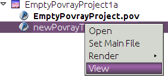
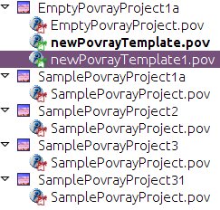

Apache NetBeans
Apache NetBeansLatest release
Writing POV-Ray Support for NetBeans VIII—Implementing ViewService and its Actions
| This tutorial needs a review. You can edit it in GitHub following these contribution guidelines. |
ViewService—the Final API Piece
The last piece of our API to implement is ViewService, which will allow us to show the most recently rendered image file associated with a POV-Ray file.
-
Create a new Java class in
org.netbeans.examples.modules.povproject, called "ViewServiceImpl".
1.
We have one utility method we created earlier, for stripping the extension from a file name. We might as well reuse it here, since here we will also need to compute the image name given a scene file. So open the Povray class in the editor, and modify the signature of stripExtension() as follows, so that it is changed from private to public static :
public static
String stripExtension(File f) {-
Returning to
ViewServiceImpl, implementViewServiceand invoke Fix Imports and use the "Implement All Abstract Methods" hint to provide skeleton implementations of all of the methods:
package org.netbeans.examples.modules.povproject;
import org.netbeans.examples.api.povray.ViewService;
import org.openide.filesystems.FileObject;
public class ViewServiceImpl implements ViewService {
@Override
public boolean isRendered(FileObject file) {
throw new UnsupportedOperationException("Not supported yet.");
}
@Override
public boolean isUpToDate(FileObject file) {
throw new UnsupportedOperationException("Not supported yet.");
}
@Override
public void view(FileObject file) {
throw new UnsupportedOperationException("Not supported yet.");
}
}-
Now, add the following method to actually find the image file for a given scene file:
private FileObject getImageFor (FileObject scene) {
FileObject imagesDir = proj.getImagesFolder(false);
FileObject result;
if (imagesDir != null) {
File sceneFile = FileUtil.toFile (scene);
if (sceneFile != null) {
String imageName = Povray.stripExtension(sceneFile) + ".png";
//Will be null if it doesn't exist:
result = imagesDir.getFileObject (imageName);
} else {
result = null;
}
} else {
//No images dir, there can't be an image
result = null;
}
return result;
}-
Implement the constructor and API methods as follows:
private final PovrayProject proj;
public ViewServiceImpl(PovrayProject proj) {
this.proj = proj;
}
@Override
public boolean isRendered(FileObject file) {
return getImageFor (file) != null;
}
@Override
public boolean isUpToDate(FileObject scene) {
FileObject image = getImageFor (scene);
boolean result;
if (image != null) {
result = scene.lastModified().before(image.lastModified());
} else {
result = false;
}
return result;
}
@Override
public void view(FileObject scene) {
FileObject image = getImageFor(scene);
if (image != null) {
DataObject dob;
try {
dob = DataObject.find(image);
OpenCookie open = dob.getNodeDelegate().getLookup().lookup(OpenCookie.class);
if (open != null) {
open.open();
return;
}
} catch (DataObjectNotFoundException ex) {
Exceptions.printStackTrace(ex);
}
}
Toolkit.getDefaultToolkit().beep();
}-
Now we just need to expose our implementation of
ViewServicevia the project’s lookup. ModifyPovrayProject.getLookup()as follows:
private Lookup lkp;
public Lookup getLookup() {
if (lkp == null) {
lkp = Lookups.fixed(new Object[] {
this, //handy to expose a project in its own lookup
state, //allow outside code to mark the project as needing saving
new ActionProviderImpl(), //Provides standard actions like Build and Clean
loadProperties(), //The project properties
new Info(), //Project information implementation
logicalView, //Logical view of project implementation
new RendererServiceImpl(this), //Renderer Service Implementation
new MainFileProviderImpl(this), //So things can set the main file
*new ViewServiceImpl(this), //Allow things to find/open the image associated with a scene file*
});
}
return lkp;
}The trailing comma in the array definition is not strictly necessary, but it’s a useful technique for reducing the CVS diff if you’re using version control, and so not a bad habit to have—if you add to the array, you only change the lines you added.
Adding a View action to POV-Ray File Nodes
Now of course, we have implemented the API, but there is no code that uses it. So what we will do here is to add a "View" action to our POV-Ray file nodes.
-
In the Povray File Support project, open
PovRayDataNodein theorg.netbeans.examples.modules.povfilepackage.
1.
First, we will add one more action into the array of popup menu actions from PovrayDataNode (modified and new lines in bold):
public Action[] getActions (boolean popup) {
Action[] actions = super.getActions(popup);
RendererService renderer =
(RendererService)getFromProject (RendererService.class);
Action[] result;
if (renderer != null && actions.length > 0) { //should always be > 0
Action rendererAction = new RendererAction (renderer, this);
*result = new Action[ actions.length + 3 ];*
result[0] = actions[0];
result[1] = new SetMainFileAction();
result[2] = rendererAction;
*result[3] = new ViewAction();*
} else {
//Isolated file in the favorites window or something
result = actions;
}
return result;
}-
Now we need to implement ViewAction. This can be an inner class inside
PovrayDataNode:
@NbBundle.Messages("LBL_View=View")
private class ViewAction extends AbstractAction {
ViewAction() {
putValue(Action.NAME, Bundle.LBL_View());
}
@Override
public void actionPerformed(ActionEvent actionEvent) {
ViewService service = (ViewService) getFromProject(ViewService.class);
FileObject fob = getDataObject().getPrimaryFile();
service.view(fob);
}
@Override
public boolean isEnabled() {
return getFromProject(ViewService.class) != null;
}
}At this point, we are ready to run the code. Note that POV-Ray files now have a working View menu item:

Icon-Badging—Adding File Listening Support
You may have noticed that there are a few methods we are not using on ViewService, particularly isUpToDate(). In the NetBeans IDE, the icon for Java classes has a "badge" in the lower right if the compiled version of it is older than the source file and it probably needs recompilation.
In an ideal world, we would parse POV-Ray source files, find all off their include files, and be able to tell if a rendered image is out of date based on all of that information. However, that would be a bit out of scope for this tutorial, since we have no POV-Ray file parser at the moment. What we can do easily enough, though, is use the implementation we already have of isUpToDate() and mark the PovrayDataNode icon if it is false.
To do this, we will need to add a method to RendererService that lets an object listen for events, which should be fired when the rendered state of a file changes. And this is exactly the sort of case where it is fortunate that RendererService is an abstract class—we can add the methods into the base class, with little risk of breaking any existing code that uses it (in practice there is the remote possibility that some implementation of RendererService already has a final method with the same name and signature [in fact exactly this happened to NetBeans when getCause() was added to Throwable in JDK 1.3], but it is a reasonable change). In this case, of course, we know we are the only ones implementing RendererService, but if this feature were something we were adding after a release, there would be no way to be sure we wouldn’t break existing clients by adding abstract methods.
-
Open
RendererService, in the Povray API project’sorg.netbeans.modules.examples.api.povraypackage, in the code editor.
1.
Add the following field and methods. What this will do is let a listener register for change events against a specific scene file, and provide a method that subclasses may call to fire such changes, and two methods that can be overridden to do any additional work needed when a listener is added or disappears. Note that since our PovrayDataNodes are created by the system on demand, they do not have such a well-defined lifecycle. So rather than try to find a point at which we can unregister the listener, we will keep weak references to our listeners, so they can be disposed as need-be.
private Map scenes2listeners = new HashMap();
public final void addChangeListener(FileObject scene, ChangeListener l) {
//Get the string name of the scene file—there is no need to hold
//the FileObject itself in memory forever, we can let it be garbage
//collected, and just hold the string path, which is less expensive
String scenePath = scene.getName();
//Make sure what we're doing is thread safe
synchronized (scenes2listeners) {
//We will use a weak reference to listeners, rather than have a
//remove listener method. This will allow our nodes to be garbage
//collected if they are hidden
Reference listenerRef = new WeakReference(l);
List listeners = (List) scenes2listeners.get(scenePath);
if (listeners == null) {
listeners = new LinkedList();
//Map the listener list for this path to the path
scenes2listeners.put(scenePath, listeners);
}
//Add the weak reference to the list of listeners interested in
//this scene
listeners.add(listenerRef);
}
//Call our callback method—probably the implementation will start
//listening to deletions of the image file, because we will need to
//fire those too. Do this outside of the synchronized block—never
//call foreign code under a lock
listenerAdded(scene, l);
}
protected void listenerAdded(FileObject scene, ChangeListener l) {
//do nothing, should be overridden. Here we should start listening
//for changes in the image file (particularly deletion)
}
protected void noLongerListeningTo(FileObject scene) {
//detach any listeners for image files being created/destroyed here
}
/**
* Fire a change event to any listeners that care about changes for the
* passed scene file. If the scene file is null, fire changes to all
* listeners for all files.
*
* @param scene a POV-Ray scene or include file
*/
protected final void fireSceneChange(FileObject scene) {
String scenePath = scene == null ? null : scene.getName();
List fireTo = null;
//Use the 3-state (null, false, true) nature of a Boolean to decide if
//we have really stopped listening
Boolean stillListening = null;
synchronized (scenes2listeners) {
//Get the list of paths -> weak references -> listeners for this
//scene
List listeners;
if (scenePath != null) {
listeners = (List) scenes2listeners.get(scenePath);
} else {
listeners = new ArrayList();
for (Iterator i = scenes2listeners.keySet().iterator(); i.hasNext();) {
String path = (String) i.next();
List curr = (List) scenes2listeners.get(path);
if (curr != null) {
listeners.addAll(curr);
}
}
}
if (listeners != null && !listeners.isEmpty()) {
//Create a list to put the listeners we will fire to into
fireTo = new ArrayList(3);
for (Iterator i = listeners.iterator(); i.hasNext();) {
Reference ref = (Reference) i.next();
//Get the next change listener for this path
ChangeListener l = (ChangeListener) ref.get();
if (l != null) {
//Add it to the list if it still exists
fireTo.add(l);
} else {
//If not, remove the dead reference
i.remove();
}
}
//If there is nothing listening, remove the empty listener list
//and stop paying attention to this path
if (listeners.isEmpty()) {
scenes2listeners.remove(scenePath);
stillListening = Boolean.FALSE;
} else {
stillListening = Boolean.TRUE;
}
}
}
//Call the listener removal method outside the synch block.
//StillListening will be null if we were never listening at all
if (stillListening != null && Boolean.FALSE.equals(stillListening)) {
noLongerListeningTo(scene);
}
//Again, fire changes outside the synch block since we
//are calling foreign code
if (fireTo != null) {
for (Iterator i = fireTo.iterator(); i.hasNext();) {
ChangeListener l = (ChangeListener) i.next();
l.stateChanged(new ChangeEvent(this));
}
}
}At this stage, the import statement block at the top of the above class should be as follows:
import java.lang.ref.Reference;
import java.lang.ref.WeakReference;
import java.util.*;
import javax.swing.event.ChangeEvent;
import javax.swing.event.ChangeListener;
import org.openide.filesystems.FileObject;-
Next we need to implement the two protected methods we defined above, in our implementation of
RendererService. In the Povray File Support project, openRendererServiceImplin the code editor.
-
Now, we will need to implement a listener interface on
RendererServiceImpl, so modify its signature as follows:
final class RendererServiceImpl extends RendererService *implements FileChangeListener* {Use the editor hint to create skeleton implementations of the methods of these interfaces. The thing to note here is that, unlike java.io.File, it is possible to listen for changes on org.openide.filesystems.FileObject, either folders or files.
-
The API class,
RendererService, knows nothing about how image files map to scene files. However, our implementation of it does know how to find the corresponding image file to a scene file. So we will override those methods to listen for changes in the presence, absence or timestamp of the image file that corresponds to a POV-Ray file. This involves a bit of boilerplate listener code and bookkeeping to decide when to start and stop listening:
//Keep a list of the paths we are currently listening to
private Set scenesListenedTo = new HashSet();
private boolean listeningToImagesFolder = false;
@Override
protected void listenerAdded(FileObject scene, ChangeListener l) {
synchronized (this) {
if (scenesListenedTo.add(scene.getPath())) {
if (scenesListenedTo.size() == 1 || !listeningToImagesFolder) {
//This is the first call, so we should start listening
//on the images folder
startListeningToImagesFolder();
}
listenTo(scene);
}
}
}
@Override
protected void noLongerListeningTo(FileObject scene) {
synchronized (this) {
scenesListenedTo.remove(scene.getPath());
}
}
private void startListeningToImagesFolder() {
FileObject imageFolder = proj.getImagesFolder(false);
listeningToImagesFolder = imageFolder != null;
if (listeningToImagesFolder) {
listenTo(imageFolder);
}
}
private void listenTo(FileObject file) {
//Add ourselves as a weak listener to the file. This way we can still
//be garbage collected if the project is closed
FileChangeListener stub = (FileChangeListener) WeakListeners.create(
FileChangeListener.class, this, file);
file.addFileChangeListener(stub);
}
@Override
public void fileFolderCreated(FileEvent fileEvent) {
//Do nothing
}
@Override
public void fileDataCreated(FileEvent fileEvent) {
FileObject created = fileEvent.getFile();
fireSceneChange(created);
}
@Override
public void fileChanged(FileEvent fileEvent) {
FileObject changed = fileEvent.getFile();
fireSceneChange(changed);
}
@Override
public void fileDeleted(FileEvent fileEvent) {
FileObject deleted = fileEvent.getFile();
fireSceneChange(deleted);
if (deleted.isFolder() && "images".equals(deleted.getNameExt())) {
//The images folder was deleted, reset our listening flags
fireSceneChange(null);
listeningToImagesFolder = false;
}
}
@Override
public void fileRenamed(FileRenameEvent fileRenameEvent) {
//do nothing
}
@Override
public void fileAttributeChanged(FileAttributeEvent fileAttributeEvent) {
//do nothing
}-
One last change we need to make is to the
render()method in theRenderServiceImplclass—it is possible that theimages/directory of the project was simply not there—it can legally be deleted. In that case, there will be nothing to listen to. The first time we render, it will be recreated if necessary. So we need to check if we were listening on theimages/folder, and if not, start now that it’s created. So, we need to modify the implementation ofrender()slightly:
@Override
public FileObject render(FileObject scene, Properties renderSettings) {
Povray pov = new Povray(this, scene, renderSettings);
*FileObject result;*
try {
result = pov.render();
*if (!listeningToImagesFolder) {
startListeningToImagesFolder();
}*
} catch (IOException ioe) {
Exceptions.printStackTrace(ioe);
*result = null;*
}
*return result;*
}One thing worth noting is our use of the WeakListeners utility class. This can be used to generate a variant of any event listener which will only reference the actual listener weakly—so you can add a listener to a long-lived object (such as the Project or something held strongly by it), but the listener can still be garbage collected. So, the FileObject`s we listen to can outlive the `RendererServiceImpl or the Project and not force them to be retained in memory simply because something wanted to listen to changes in a file or folder.
Icon-Badging—Implementing Icon Badging
Now we need to actually display different icons depending on the rendered state of the scene file being represented. The NetBeans Utilities API offers a handy method for merging multiple images together—ImageUtilities.mergeImages().
-
In the Povray File support module, edit the class declaration of
PovrayDataNodeso that it implementsChangeListenerand add the appropriatestateChanged()method.
1.
Add the highlighted code below, in the constructor for PovrayDataNode:
public PovrayDataNode(PovrayDataObject obj) {
super(obj, Children.LEAF);
*RendererService serv = (RendererService) getFromProject(RendererService.class);
if (serv != null) {
//Could be an isolated file outside of a project, in which
//case there is no renderer service
serv.addChangeListener (obj.getPrimaryFile(), this);
}*
}-
The
stateChanged()method can be implemented very simply:
public void stateChanged(ChangeEvent changeEvent) {
*fireIconChange();*
}-
Now we need to override
getIcon()to return different icons depending on the state of theNode:
private static final String NEEDS_RENDER_BADGE_FILE =
"org/netbeans/examples/modules/povfile/needsRenderBadge.png";
private static final String HAS_IMAGE_BADGE_FILE =
"org/netbeans/examples/modules/povfile/hasImageBadge.png";
private static final String NO_IMAGE_BADGE_FILE =
"org/netbeans/examples/modules/povfile/hasNoImageBadge.png";
@Override
public Image getIcon(int type) {
Image result = super.getIcon(type);
ViewService vs = (ViewService) getFromProject(ViewService.class);
if (vs != null) {
FileObject file = getFile();
boolean hasRender = vs.isRendered(file);
if (hasRender) {
Image badge1 = ImageUtilities.loadImage(HAS_IMAGE_BADGE_FILE);
result = ImageUtilities.mergeImages(result, badge1, 8, 8);
boolean upToDate = vs.isUpToDate(file);
if (!upToDate) {
Image badge2 = ImageUtilities.loadImage(NEEDS_RENDER_BADGE_FILE);
result = ImageUtilities.mergeImages(result, badge2, 8, 0);
}
} else {
Image badge3 = ImageUtilities.loadImage(NO_IMAGE_BADGE_FILE);
result = ImageUtilities.mergeImages(result, badge3, 8, 8);
}
}
return result;
}Here we have defined a set of constants that are paths to icons, and depending on the state, we will merge various ones with the base. Each of our badge images is 8x8 pixels, so it can neatly be placed in one of the quadrants of our 16x16 icon.
-
Create the necessary image files in the
org.netbeans.examples.modules.povfilepackage—here are the ones used in the tutorial:-
hasImageBadge.png
-
hasNoImageBadge.png
-
needsRenderBadge.png
-
1. Run the application. Notice the icon badging, and the changes when you render or remove rendered images:

Next Steps
We’re almost done. The next step will be adding project build support and putting some finishing touches on our UI and code.